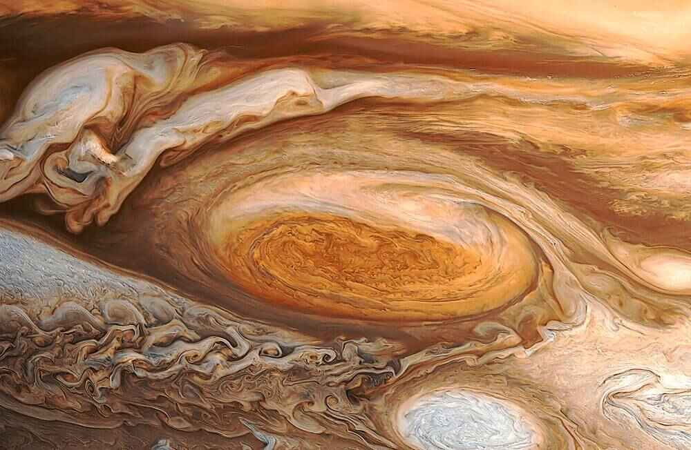

Интересные объекты в атмосфере
Ядро
Юпитер в Солнечной системе
Интересные факты о планете
ЮПИТЕР
 Юпитер — пятая планета от Солнца и самая большая планета Солнечной системы, газовый гигант, масса которого более чем в два с половиной раза превышает массу всех других планет вместе взятых, при этом она составляет чуть менее одной тысячной массы Солнца.
Юпитер — пятая планета от Солнца и самая большая планета Солнечной системы, газовый гигант, масса которого более чем в два с половиной раза превышает массу всех других планет вместе взятых, при этом она составляет чуть менее одной тысячной массы Солнца.
Интересные объекты в атмосфере
 БОЛЬШОЕ КРАСНОЕ ПЯТНО
Большое Красное пятно - это самый большой шторм в Солнечной системе. Является антициклоном и существует 346 лет. Период вращения вихря 6 земных дня, вращение происходит против часовой стрелки.БКП уменьшается, это значит, буря утихает. Инфракрасные снимки показывают, что БКП холоднее, чем окружающие облака, а значит находится выше. Красноватый оттенок пятну придает, скорей всего, поднимающее с нижних уровней вещество красного цвета.